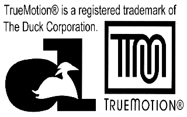
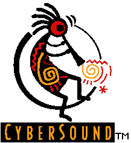
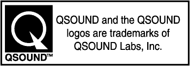
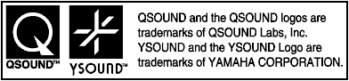

★セガサターンソフトウェア作成基準
★セガサターンソフトウェア作成基準
あらかじめ他社の手によって用意されたライブラリを使用する場合、及び他社所有の特許を使用する場合は、ライセンス契約に基づき、その会社の社名ロゴ・許諾表示等を決められた場所に表示しなければならない。
タイトルループ（ムービー中もしくはそれ以外の場所）に２秒以上単独表示 ＜義務＞
パッケージ（バックインレイ）に１箇所 ＜義務＞
取扱説明書（裏面もしくは最終ページ）に１箇所 ＜義務＞
図 別添1-1 TrueMotionロゴ

パッケージ（バックインレイ）に１箇所 ＜義務＞
エンディング（スタッフロール）画面に１箇所 ＜義務＞
その他タイトルループやサウンドテストで表示するのが望ましい ＜推奨＞
図別添1-2 Cyber Soundロゴ

パッケージ（バックインレイ）に１箇所 ＜義務＞
取扱説明書（裏面）に１箇所 ＜義務＞
ＣＤレーベルに１箇所 ＜義務＞
図別添1-4 QSoundロゴ

パッケージ（バックインレイ）に１箇所 ＜義務＞
取扱説明書（裏面）に１箇所 ＜義務＞
ＣＤレーベルに１箇所 ＜義務＞
図別添1-5 Ysoundロゴ

「ゲーム中のフォントは、FONTWORKS International Limitedのものを使用しています。 FONTWORKSのフォントの名称、社名、及びロゴは、FONTWORKS International Limited の商標または登録商標です。」
「Fonts, using in this game are supported by FONTWORKS International Limited. FONTWORKS product-names and FONTWORKS logos are registered trademarks or trademarks of FONTWORKS International Limited. Copyright 1994 FONTWORKS International Limited. All right reserved.」
★セガサターンソフトウェア作成基準